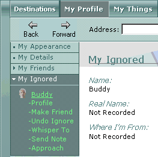

As you join in conversation with others in Desktop World, you may discover that you do not want to read comments from certain members. To filter out a person's messages from the chat history section of the main window, add that person to your My Ignored list.

When you add someone to your My Ignored list, that person appears to be the color gray (to you). You no longer see his or her messages, and everyone in the room sees a message in their chat history area that says you are ignoring that particular person. Other guests can still "hear" the messages from the person you are ignoring.
The list is saved between sessions in Desktop World.
- Click the People tab
 .
.
- From the People menu, click the name of the member you would like to ignore.
- From the list of options that appears, click Ignore.
A message appears in the chat history area informing the person that you are ignoring them.
That person is added to your My Ignored list.
Note You may also ignore someone by right-clicking either a member in the the 3-D view, or his or her name in the People menu. From the menu that appears, click Ignore.
- Click the My Profile tab
 .
. - Click My Ignored list.
- Select a name and click Undo Ignore.
The person is notified that you are no longer ignoring them.
My Friends
My Ignored
Sending Gifts
Sending Notes
Talking to People
Whispering to People